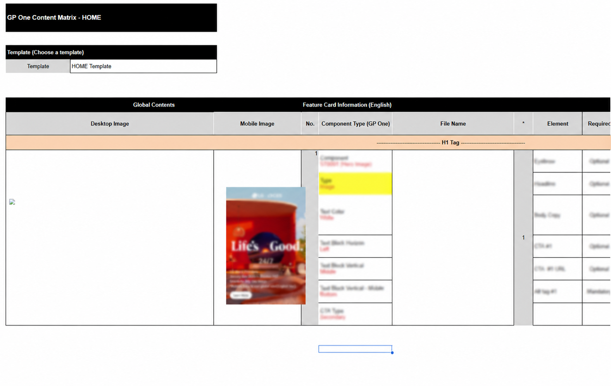
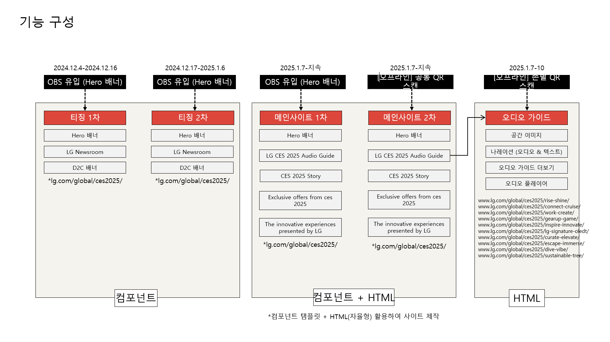

Global Exhibition Website / AI Audio Docent
5개 언어의 AI 도슨트를 AEM으로 구축하고 글로벌 웹 경험으로 확장했습니다.
141%전년 대비 방문자 증가
2,206전시별 오디오 도슨트 청취
5지원 언어
기간2024.11 – 2025.01
프로젝트LG CES 2025 AI 디지털 도슨트
담당서비스 기획 · AEM 직접 구축·운영 · 다국어 AI 도슨트 · 글로벌 콘텐츠 배포

현장 전시 콘텐츠를 5개 언어의 AI 도슨트와 글로벌 웹 경험으로 연결했습니다.
현장 관람객은 전시존 QR로, 온라인 방문자는 글로벌 웹사이트로 CES 콘텐츠를 탐색하도록 디지털 도슨트를 설계했습니다. 5개 언어의 AI TTS 오디오와 행동 데이터 측정을 적용하고, AEM에서 페이지를 직접 구축·운영했습니다.
다국어 전시 경험과 글로벌 웹 운영을 하나의 구축 구조로 연결해야 했습니다.
동일한 URL에서 전시 전·중·후 콘텐츠를 단계별로 운영했습니다.
동일한 AEM 페이지를 사전 티징, 행사 오픈, 행사 종료 후 아카이브의 3단계로 구분했습니다. 단계별 노출 콘텐츠와 기능을 정의하고, URL을 변경하지 않은 채 컴포넌트와 콘텐츠를 전환해 전시 전·중·후의 사용자 경험을 연속적으로 운영했습니다.
01약 80개 글로벌 닷컴의 KV 배너로 CES 페이지 유입
02티징 단계에서 전시 메시지와 일정 안내
03행사 오픈과 함께 전시 콘텐츠·AI 도슨트 공개
04전시존 QR로 해당 콘텐츠와 오디오 도슨트 접속
05언어·콘텐츠·QR 위치별 이용 데이터 수집
06행사 종료 후 동일 URL을 아카이브 콘텐츠로 전환
광고주 커뮤니케이션부터 AEM 구축과 글로벌 배포까지 역할을 분담했습니다.
CES 전시 메시지, 글로벌 콘텐츠 운영 방향과 최종 결과물 승인
광고주 요구사항, 일정과 주요 의사결정 사항 커뮤니케이션
KV 배너 등록 기준 검토 및 약 80개 글로벌 닷컴 배포
AEM 자율형 영역에 적용할 HTML·CSS 소스 제작
- 서비스·콘텐츠 구조CES 메인·전시존·AI 오디오 도슨트의 정보 구조와 콘텐츠 흐름 설계
- AEM 직접 구축AEM 컴포넌트 생성과 HTML·CSS 소스 적용을 통한 페이지 직접 구축
- 다국어 AI 도슨트영어·중국어·일본어·스페인어·프랑스어 콘텐츠와 TTS 운영 기준 정의
- 글로벌 배포콘텐츠 매트릭스·KV 배너 타입 정의 및 글로벌 배포 자료 제작
- 단계별 사이트 운영동일 URL에서 티징·행사 오픈·아카이브 단계별 콘텐츠 전환
- 데이터 측정QR 파라미터·UTM·GA 이벤트와 데일리 리포트 기준 정의
역할 범위: HS Ad가 광고주 커뮤니케이션을 담당하고, 저는 서비스·다국어 콘텐츠 기획부터 AEM 페이지 구축까지 직접 수행했습니다. 콘텐츠 매트릭스와 KV 배너 타입을 정의해 LG 라이브러리언과 약 80개 글로벌 닷컴에 진입 배너를 배포하고, 동일 URL을 티징·행사 오픈·아카이브 단계로 운영했습니다.
글로벌 웹 탐색과 현장 QR, 5개 언어의 AI 오디오 경험을 연결했습니다.

경험 01 · AEM 글로벌 전시 페이지
AEM 컴포넌트와 HTML 영역을 결합한 글로벌 전시 페이지 구축
전시 메시지에서 전시존별 콘텐츠와 오디오 도슨트로 이어지는 정보 구조를 설계했습니다. AEM 컴포넌트를 직접 생성하고 자율형 영역에 HTML·CSS 소스를 적용해, 동일 URL에서 단계별 콘텐츠를 전환하는 페이지를 구축했습니다.

경험 02 · AI 오디오 도슨트
5개 언어로 제공한 전시존별 AI 오디오 도슨트
영어·중국어·일본어·스페인어·프랑스어로 전시존별 오디오 콘텐츠를 제공했습니다. 언어별로 ElevenLabs와 Baidu TTS를 적용하고 이미지·설명·오디오·만족도 조사를 한 화면에 구성해 현장과 온라인에서 동일한 경험을 제공했습니다.

경험 03 · 현장·데이터 접점
전시존 QR을 오디오 진입과 유입 측정의 분리 설계
공통 QR과 전시존별 QR의 설치 위치·연결 콘텐츠를 구분했습니다. QR별 파라미터와 GA 이벤트를 적용해 오디오 도슨트로 연결하고, 유입 위치와 청취 행동을 측정했습니다.
반복 운영과 글로벌 확장을 고려해 구축 기준을 정의했습니다.
별도 페이지 생성 없이 운영 단계별 콘텐츠를 전환했습니다.
유입 경로와 URL을 유지하기 위해 하나의 AEM 페이지에서 컴포넌트와 콘텐츠를 전환했습니다. 티징·행사 오픈·아카이브 단계별 노출 범위와 전환 시점을 사전에 정의했습니다.
언어별 품질과 지원 범위를 기준으로 TTS를 이원화했습니다.
영어·일본어·스페인어·프랑스어에는 ElevenLabs를, 중국어에는 Baidu TTS를 적용했습니다. 지원 언어와 음성 자연스러움·발음·운영 안정성을 비교해 언어별 적용 기준을 정의했습니다.
콘텐츠 매트릭스로 약 80개 글로벌 닷컴의 KV 배포 기준을 충족했습니다.
국가별 KV 규격·메시지·연결 URL을 콘텐츠 매트릭스로 관리하고 배너 타입별 LG 승인을 진행했습니다. 승인된 KV는 LG 라이브러리언과 협업해 약 80개 글로벌 닷컴의 홈페이지 진입 배너로 배포했습니다.
AEM을 직접 구축하며 구현 가능성과 운영 이슈를 즉시 검증했습니다.
AEM 컴포넌트를 생성하고 실제 운영 환경에서 화면을 구현하며 컴포넌트 제약과 콘텐츠 노출 이슈를 확인하고 기획·구축 기준에 반영했습니다.
AEM 구축·다국어 TTS·글로벌 배포 기준을 실행 가능한 산출물로 정리했습니다.

AEM 컴포넌트와 자율형 HTML 영역의 역할·배치를 정의한 페이지 구축 계획

지원 언어·발음·음성 품질·운영 안정성을 비교한 TTS 선정 자료

국가별 KV 메시지·규격·연결 URL을 관리하는 콘텐츠 매트릭스 문서

동일 URL에서 티징·행사 오픈·아카이브 단계별 노출 콘텐츠와 전환 시점을 정의한 운영 계획
5개 언어의 AI 도슨트 구축부터 글로벌 배포·운영까지 직접 수행했습니다.
AEM 컴포넌트 생성과 HTML·CSS 소스 적용을 통한 CES 전시 페이지 직접 구축
ElevenLabs·Baidu TTS를 적용한 5개 언어 AI 오디오 도슨트 구축
콘텐츠 매트릭스와 승인된 KV 배너를 약 80개 글로벌 닷컴에 배포
동일 URL을 티징·행사 오픈·아카이브로 전환하는 3단계 운영 체계 구축